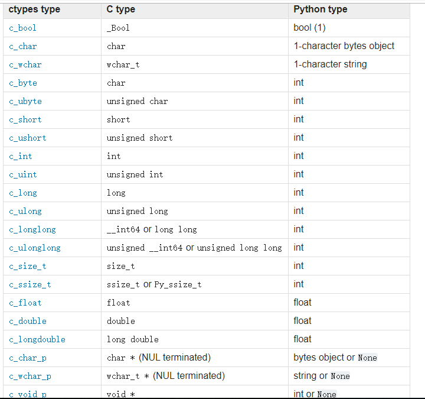

ShellCode Loader

当目标机上存在杀软时，MSF/CS默认生成的Payload极大概率会被Kill掉，这样就很难受了。
这个时候我们就需要一个能免杀加载Payload的程序了.
Python？
为啥要用python呢？
实际上ctypes函数的原型都是c++函数，之所以使用python来打包，是因为考虑到偏门语言编译自带的一些免杀光环.
加载器这个东西很多语言都可以实现，比如:
- [go-shellcode] https://github.com/brimstone/go-shellcode
- [c#] https://github.com/cribdragg3r/Simple-Loader
- c++
以上举例有部分并不完善，但作概念验证足以。
再来康康最近网上公开的几个python加载器代码
# 仅python2 |
import ctypes |
import ctypes |
原理都是通过ctypes库在内存注入shellcode，只要通过pyinstall打包为exe
（对py版本有要求，否则报错，如我的3.7.3报错了）
ctypes
[python官方文档] https://docs.python.org/3/library/ctypes.html

在官方文档中我们可以看到，对应的数据类型
提取一下核心函数
VirtualAlloc(0, len(shellcode), 0x1000, 0x40) |
VirtualAlloc
引用一下rcoil大佬的原话
Cobalt Strike提供了两种在远程进程中分配内存并将数据复制到其中的选项，而其中默认使用项就是使用了 VirtualAllocEx -> WriteProcessMemory 的经典模式，这模式也是红队工具中最常见的模式。此模式也适用于不同的进程体系结构。
而这里的VirtualAlloc也是类似的，不过VirtualAllocEx 是在另一个进程分配内存VirtualAlloc则在本进程，其函数原型为

lpAddress要分配的区域的起始地址dwSize要分配的大小, 以字节为单位flAllocationType内存分配的类型,具体类型种类可以自行查看flProtect对要分配的页面区域的内存保护
RtlMoveMemory
将源内存块的内容复制到目标内存块
VOID RtlMoveMemory( |
Destination指向要复制字节的目标存储块的指针。Source指向要复制字节的目标存储块的指针。Length从源复制到目标的字节数。
VirualProtect
BOOL VirtualProtect( |
flNewProtect内存保护选项lpflOldProtect指向变量的指针，该变量接收页面的指定区域中第一页的先前访问保护值。
#示例 |
CreateThread
创建一个线程以在调用进程的虚拟地址空间内执行
HANDLE CreateThread( |
lpThreadAttributes描述是否可以由子进程继承dwStackSize堆栈的初始大小，以字节为单位 , 参数为0，则使用可执行文件的默认大小 (1MB)lpStartAddress该指针表示线程的起始地址lpParameter指向要传递给线程的变量的指针dwCreationFlags控制线程创建的标志，0为创建后立即执行lpThreadId指向接收线程标识符的变量的指针，为 NULL，则不返回线程标识符
WaitForSingleObject
DWORD WaitForSingleObject( |
hHandle对象的句柄dwMilliseconds超时时间间隔（以毫秒为单位）如果指定了非零值，则函数将等待直到发出信号通知对象或间隔过去
C++原型
很显然这些加载器的过程都是大同小异，核心就是以下流程
- 通过VirtualAlloc \ VirtualAllocEx分配内存
- 通过RtlMoveMemory \ RtlCopyMemory将Shellcode复制或移动到已分配内存中
（C++中可简写为memcpy\memove） - 使用CreateThread在子线程中运行
当然如果使用VirtualAllocEx就不需要使用CreateThread了
这里贴一下这些变形函数的c++原型
|
PS:这个原型模板编译出来的exe已经被主流杀软杀掉了，这里鄙视下360。原因你懂的
小结
说点题外话，cobaltstrike4.0的artifact kit中，根据作者展示的视频(可以在YouTube找到，目前只有生肉)
作者使用HeapCreate，HeapAlloc的方式 ,替代了常见的VirtualAlloc,RtlMoveMemory的模板，成功ByPass了Win10的Defender。相信很多小伙伴已经开始举一反三了呢。